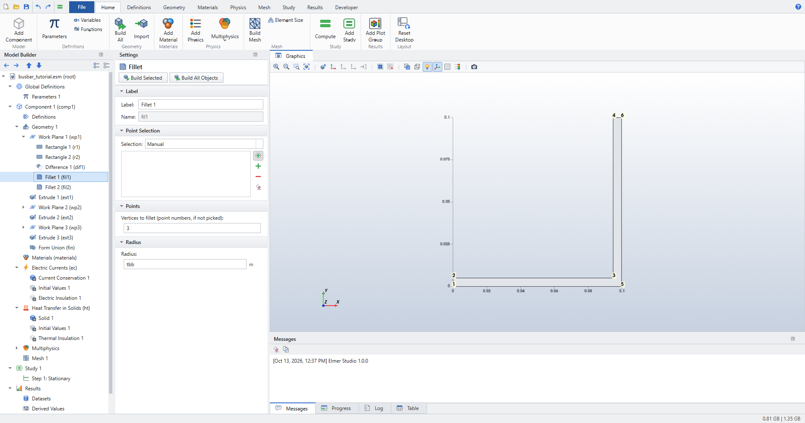
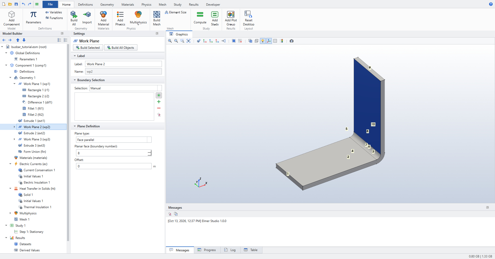
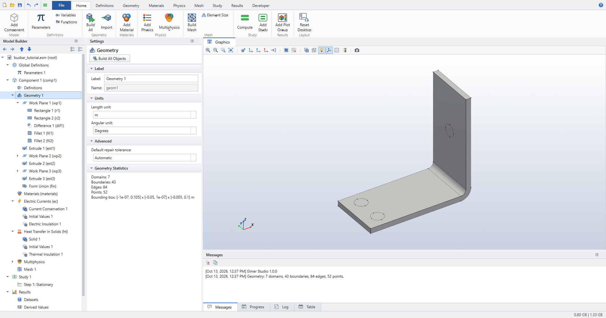
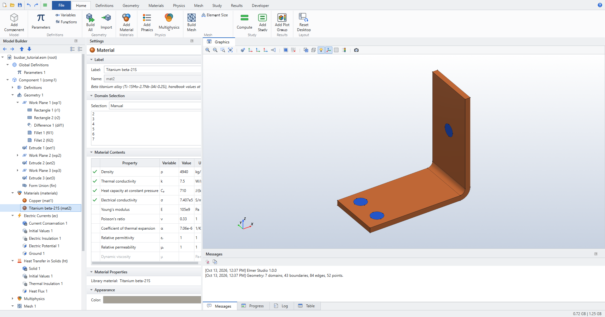
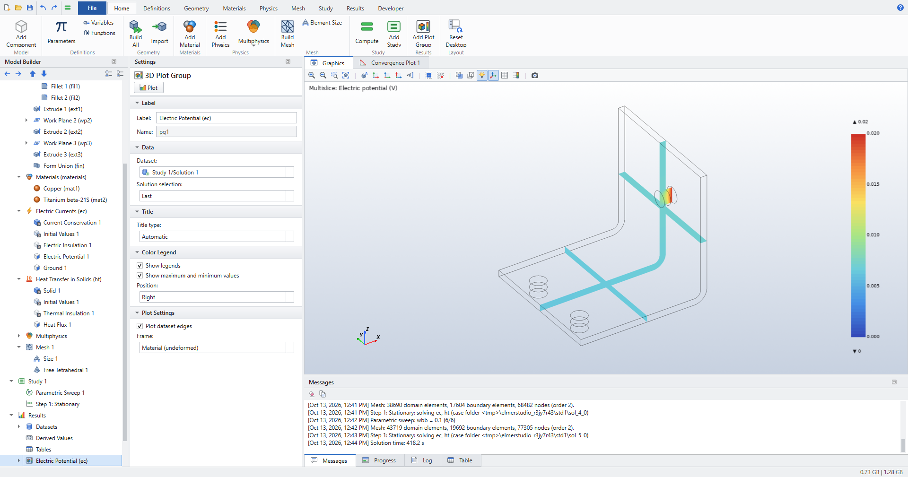
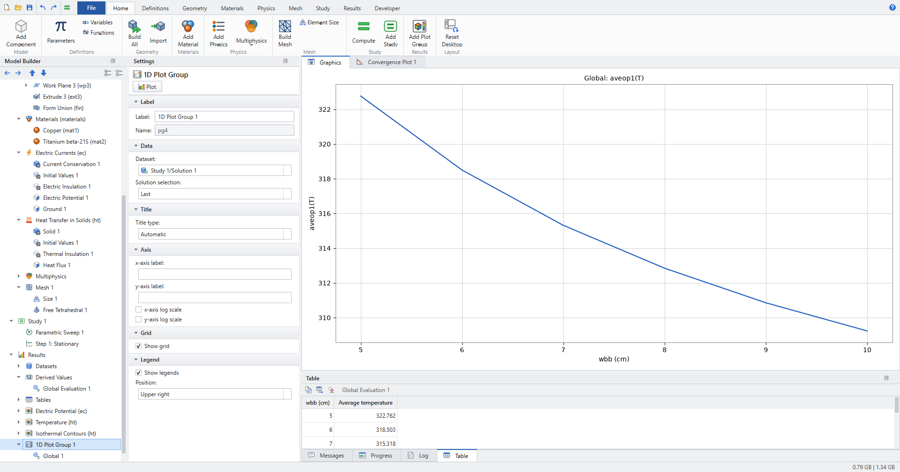

Busbar: Joule Heating
A copper busbar carries a direct current between three titanium bolts. The current heats the bar (Joule heating) and the bar loses that heat to the surrounding air by convection. You build the geometry from parameters, solve the coupled electric and thermal problem, then sweep the busbar width and plot how the average temperature falls as the bar gets wider.
-
Set up a multiphysics model with the Model Wizard (Joule Heating).
-
Sketch on a work plane, round corners, and extrude; place work planes on faces of the part you built.
-
Assign two materials and apply boundary conditions by clicking faces.
-
Use a user-controlled mesh driven by a parameter.
-
Run a parametric sweep and evaluate a coupling operator (
aveop1(T)) over all sweep values.
Space dimension |
3D |
Physics |
Electric Currents (ec) + Heat Transfer in Solids (ht), coupled by Electromagnetic Heating |
Study |
Stationary, with a Parametric Sweep over the width |
Mesh |
Quadratic tetrahedra; about 37 000 nodes at |
Solve time |
6 to 8 minutes for the whole sweep on a desktop PC (two recorded runs: 350 s and 447 s) |
| If you know COMSOL, this is the busbar from Introduction to COMSOL Multiphysics. The workflow is the same; the differences are called out in notes along the way. Elmer Studio is an independent project and is not affiliated with COMSOL. |
Start a new model
-
Click (Ctrl+N) and choose Model Wizard.
-
On Select Space Dimension, choose 3D.
-
On Select Physics, expand Heat Transfer › Electromagnetic Heating, select Joule Heating and click Add. The list on the right now shows Electric Currents (ec) and Heat Transfer in Solids (ht).
-
Click Study, select General Studies › Stationary and click Done.
The Model Builder now contains Component 1 with Geometry 1, Materials, Electric Currents (ec), Heat Transfer in Solids (ht), Multiphysics (with the Electromagnetic Heating coupling), Mesh 1 and Study 1. Elmer Studio has already added the default features: Current Conservation 1, Electric Insulation 1, Solid 1, Thermal Insulation 1 and the Initial Values nodes.
Parameters
-
On the Home ribbon, click . This selects Parameters 1 under Global Definitions.
-
In the Settings window, type the following rows into the table. Each new row appears when you start typing in the empty last row; the Value column fills in by itself.
Name Expression Description L
9[cm]Length of lower part of the busbar
rad_1
6[mm]Radius of the titanium bolts
tbb
5[mm]Thickness of the busbar
wbb
5[cm]Width of the busbar
mh
3[mm]Maximum element size
htc
5[W/(m^2*K)]Heat transfer coefficient
Vtot
20[mV]Applied electric potential
| The Load from File and Save to File buttons under the table read and write the list as a text file with one parameter per line (name, expression, description, separated by spaces). |
Geometry
The busbar is an L-shaped profile drawn in the xz-plane and extruded by the width wbb.
The bolts are circles drawn on faces of that extruded bar and extruded through it.
The geometry stays in the default length unit, metres; all sizes come from the parameters.
See Geometry for how work planes, building and entity numbers work.
Work Plane 1: the L profile
-
Click Geometry 1, then click .
-
In the Settings of Work Plane 1, keep Plane type
Quickand set Plane toxz-plane. -
Right-click Work Plane 1 and choose Primitives › Rectangle. In Rectangle 1 set Width
L+2*tbband Height0.1. Leave the position at0,0. -
Right-click Work Plane 1 again and choose Primitives › Rectangle. In Rectangle 2 set Width
L+tbb, Height0.1-tbb, x0and ytbb. -
Right-click Work Plane 1 and choose Booleans and Partitions › Difference. In Difference 1 check
r1under Objects to add andr2under Objects to subtract. -
Press F7 (Build Selected) to build the work plane up to this node.
Next, round the inner corner of the L with radius tbb and the outer corner of the bend with radius 2*tbb.
A plane fillet refers to the corners by point number. Points are numbered by position, x first, then y: in the L profile, point 3 is the inner corner at (95[mm], 5[mm]).
-
Right-click Work Plane 1 and choose Conversions › Fillet (or, with a node of the work plane selected, click ). Fillet 1 is added to the work plane. The Graphics window shows the plane sketch built so far, with its points numbered.
-
Click point 3, the inner corner, in the Graphics window (or type
3into Vertices to fillet (point numbers, if not picked)), and set Radius totbb.
Figure 1. The plane sketch at Fillet 1: the L profile with its six corner points numbered by position -
Add a second fillet the same way. In Fillet 2, pick point 6 and set Radius to
2*tbb. Point 6 is the outer corner of the bend at (100[mm],0). After Fillet 1, the rounded inner corner has two end points instead of one, so the corners further right move up by one number. The sketch at Fillet 2 shows the new numbers.
| In 2D models and inside work planes, Fillet and Chamfer act on the sketch’s corner points. In a 3D geometry sequence, they act on the edges of a solid. |
Extrude 1: the bar
-
Click Fillet 2, then click . Extrude 1 is added after the work plane with
wp1checked under Input objects. -
Set Distance from work plane to
wbb. -
Press F7. The bar is 100 mm high, 100 mm long and
wbbwide.
Work Plane 2: the upper bolt
-
With Extrude 1 selected, click .
-
In Work Plane 2 set Plane type to
Face parallel. The Graphics window shows the geometry built so far with its boundary numbers. -
Type
8into Planar face (boundary number). Boundary 8 is the inner face of the vertical leg, at x = 95 mm; it turns blue in the Graphics window. Instead of typing, you can click that face: a picked face appears in the Boundary Selection list and takes precedence over the typed number.
Figure 2. Picking the face for the face-parallel work plane: boundary 8 is highlighted -
Right-click Work Plane 2 and choose Primitives › Circle. Set Radius to
rad_1. Keep x and y at0: the work plane’s origin is the centre of face 8. -
Click Circle 1, then click . Extrude 2 takes
wp2as input. Set Distance from work plane to-2*tbb.The face normal points out of the bar, so a negative distance extrudes the circle into the vertical leg and
tbbout of its far side.
Work Plane 3: the two lower bolts
-
With Extrude 2 selected, click .
-
In Work Plane 3 set Plane type to
Face paralleland type4into Planar face (boundary number) (or click the face). Boundary 4 is the top face of the horizontal leg. -
Right-click Work Plane 3 and choose Primitives › Circle. Set Radius
rad_1, x-L/2+1.5[cm]and y-wbb/4. -
Right-click Work Plane 3 and choose Transforms › Copy. In Copy 1 check the circle (
c2) under Input objects and set the displacement y towbb/2. -
Click Copy 1, then click . Extrude 3 takes
wp3as input. Set Distance from work plane to-2*tbb. -
Click Geometry 1 and press F8 (Build All Objects).
The geometry has 7 domains: domain 1 is the copper bar and domains 2–7 are the bolts. Each bolt is split in two where it passes the surface of the bar. Form Union at the end of the sequence joins everything into one mesh-compatible assembly.

Save now with Ctrl+S. Models are stored as .esm files.
|
Materials
-
Click . The Add Material window opens on the right.
-
Select Built-in › Copper and click Add to Component. The first material you add covers all domains.
-
Select Metals › Titanium beta-21S and click Add to Component. This material starts with an empty selection.
-
In the Settings of Titanium beta-21S, click the six bolt domains 2, 3, 4, 5, 6 and 7 in the Graphics window. They turn blue and appear in the Domain Selection list. Transparency in the Graphics toolbar helps to see the bolt parts inside the bar.
The Material Contents table marks every property the physics needs with a check mark: density, thermal conductivity, heat capacity and electrical conductivity. Copper still lists all domains; as in COMSOL, where two materials share a domain, the one lower in the Model Builder is used.

See Materials for the material library and user materials.
Physics
Current enters through the end face of the upper bolt and leaves through the bottom faces of the two lower bolts. Every other outside surface loses heat by convection.
Electric Currents
-
Click Electric Currents (ec) in the Model Builder.
-
Click .
-
In Electric Potential 1, click boundary 43, the end face of the upper bolt sticking out of the vertical leg. Set Electric potential to
Vtot. -
Click Electric Currents (ec) again and click .
-
In Ground 1, click boundaries 7 and 14, the bottom faces of the two lower bolts.
| To rotate the view and reach the bottom faces, drag with the left mouse button; F5 zooms back to the whole model. Clicking a selected entity again removes it from the selection. |
All remaining boundaries keep the default Electric Insulation 1. The settings are listed in Electric Currents (ec).
Heat Transfer in Solids
-
Click Heat Transfer in Solids (ht) and click .
-
In Heat Flux 1, set Flux type to
Convective heat flux, Heat transfer coefficient tohtcand External temperature to293.15[K](the default). -
Select the outside surfaces except the three bolt contact faces:
-
Click Select All in the Graphics window toolbar. All 43 boundaries are added to the list.
-
In the Boundary Selection list, hold Ctrl and click
7,8,9,12,14,15,16,19,21,23,25,27,33,34,35,36,38and43. -
Click the Remove button (the minus sign) next to the list. 25 boundaries remain.
-
| In COMSOL, a boundary condition with all boundaries selected acts only on the exterior ones. In Elmer Studio, only the default features (such as Thermal Insulation) are restricted to exterior boundaries; a feature you add acts on every boundary in its list. The 15 boundaries removed above besides 7, 14 and 43 are the interfaces between the bolts and the bar, which must not lose heat. |
The Joule heat source needs no setup: the Electromagnetic Heating coupling under Multiphysics feeds the resistive losses of Electric Currents into Heat Transfer on all domains. See Heat Transfer in Solids (ht) and Physics interfaces.
Mesh
The mesh is controlled by the parameter mh.
-
On the Mesh ribbon, click . Mesh 1 switches to a user-controlled sequence and gets two nodes, Size 1 and Free Tetrahedral 1.
-
Click Size 1. Set Element size to
Custom, then set:-
Maximum element size:
mh -
Minimum element size:
mh-mh/3 -
Curvature factor:
0.2
-
-
Click . The Messages window reports the number of elements and nodes.
Elements are quadratic, because both physics interfaces use quadratic discretization by default. See Mesh for the other size settings.
Study
First solve one width, then add the sweep.
-
Click Study 1 and click (Ctrl+=). The Progress window and a Convergence Plot tab show the solver at work; three default plot groups appear under Results when it finishes.
-
To sweep the width, click . Parametric Sweep 1 is added at the top of Study 1.
-
Set Parameter name to
wbb, Parameter value list torange(5,1,10)and Parameter unit tocm. That is six widths from 5 cm to 10 cm in steps of 1 cm.
The geometry and mesh are rebuilt for every width. Before computing, add the coupling operator you will evaluate afterwards.
-
Right-click Definitions under Component 1 and choose Average.
-
In Average 1, set Operator name to
aveop1. Leave the Domain Selection at all domains. -
Click . The Messages window lists each sweep step, for example
Parametric sweep: wbb = 0.1 (6/6).
The operator defined under Definitions works in any result expression: aveop1(T) is the volume average of the temperature over the selected domains, like COMSOL’s Average component coupling.
|
Results
After the sweep, the plot groups show the last parameter value (wbb = 10 cm) unless you change Solution selection in the plot group.
Temperature and potential
-
Click Temperature (ht) to see the surface temperature. The top bolt, where the current enters, is the hottest part.
-
Click Electric Potential (ec). The Multislice plot shows the potential falling from 20 mV at the upper bolt to 0 at the two grounded bolts.

Average temperature versus width
-
Click . In Global Evaluation 1:
-
Dataset:
Study 1/Solution 1 -
Time/parameter selection:
All(the default) -
In the Expressions table, type
aveop1(T)in the Expression column andAverage temperaturein Description.
-
-
Click Evaluate at the top of the Settings window. The Table window lists one row per width.
-
Click . A 1D Plot Group with a Global 1 plot is added.
-
In Global 1, set Expression (global, e.g. aveop1(T), or a field to reduce) to
aveop1(T)and Reduction toGlobal (scalar expression). -
Click Plot. The x-axis is the sweep parameter,
wbb (cm).

See Results, Plot groups and plots and Derived values.
Check the results
These are the checks in tests/test_tutorial_busbar.py, which builds this model step by step and runs the sweep; they follow what the COMSOL tutorial text states.
-
The geometry has 7 domains; domains 2–7 are the bolts.
-
At
wbb= 5 cm the maximum temperature is above 300 K, well above the ambient 293.15 K (about 330.5 K). -
The temperature difference across the whole device is less than 10 K (8.0 K at 5 cm, 8.5 K at 10 cm).
-
The average temperature decreases with every step of the width sweep: about 322.8 K at 5 cm, 318.5 K at 6 cm, 315.3 K at 7 cm, 312.8 K at 8 cm, 310.9 K at 9 cm and 309.2 K at 10 cm.
The values in brackets come from a verification run of the test model; your last digit may differ because the mesh is generated afresh.
The project README lists two further physical checks:
-
The top bolt is the hottest part: the maximum temperature sits on the end face of the upper bolt, where the current enters.
-
The Joule power generated in the bar equals the heat lost by convection to within 0.4 % (about 3.2 W at 5 cm; the verification run gave 0.3 % at every width).
To check the power balance yourself, compare a Volume Integration of ec.Qrh (the Joule loss density) with a Surface Integration of htc*(T-293.15[K]) over the 25 convective boundaries.
What next
-
Change
htcorVtotin Parameters 1 and compute again; the solution follows the parameters. -
Look at the current density: add a 3D Plot Group with a Slice of
ec.normJ. -
lists the Busbar example in the Application Libraries. It is a simpler busbar built from blocks, with bolt holes but no bolts, that solves in a few seconds.
-
Continue with the Wrench: Stationary Solid Mechanics tutorial: stationary solid mechanics and a mesh convergence study.
-
Keyboard shortcuts are listed in Keyboard and mouse.